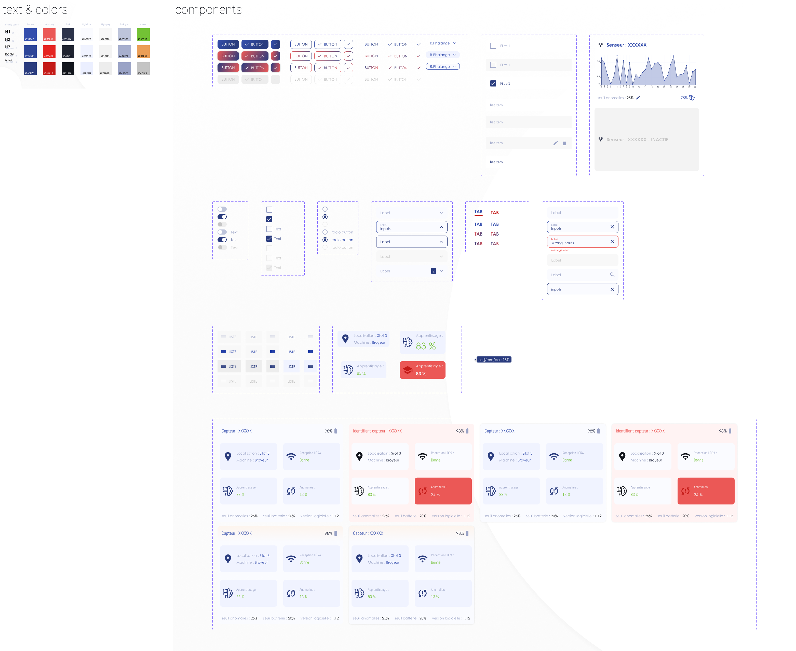
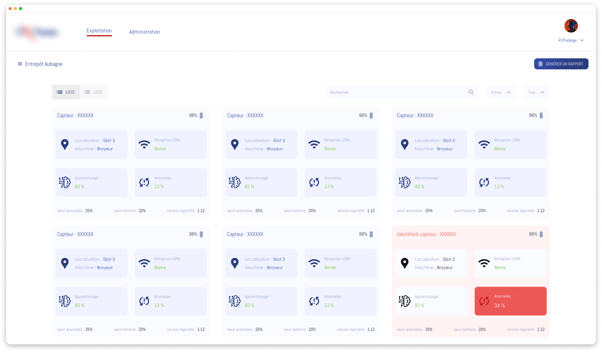
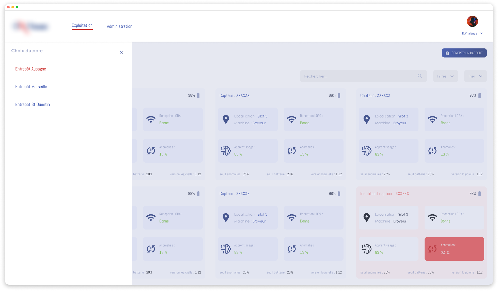
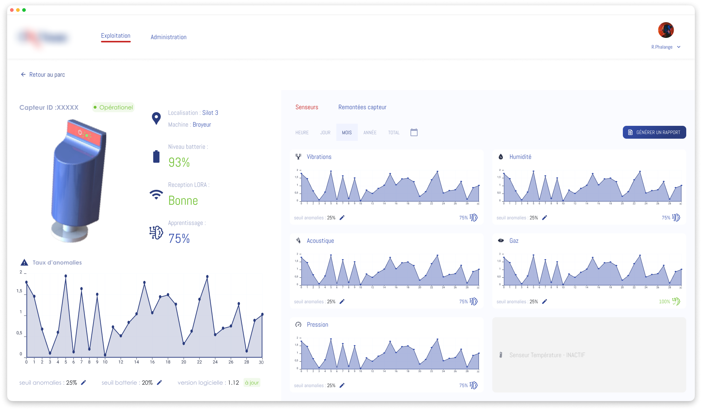

Application de maintenance prédictive
Contexte
Une entreprise spécialisée dans les systèmes électroniques embarqués a développé une solution de maintenance prédictive basée sur des capteurs. Le projet consistait à enrichir une application existante et à faciliter l’exploitation des données via des interfaces adaptées et des services associés.
Objectifs
Dans un contexte concurrentiel, l’enjeu était de garantir la durabilité et l’attractivité de la solution en proposant une expérience utilisateur adaptée aux besoins métiers, ainsi qu’une interface simple, lisible et intuitive, capable de valoriser des données techniques complexes.
Rôle & démarche
- Réalisation d’un audit ergonomique de l’application mobile existante ;
- Analyse des usages et formulation de recommandations UX ;
- Conception de maquettes fonctionnelles pour l’application et le démonstrateur API ;
- Travail sur le design graphique afin d’améliorer la lisibilité et la cohérence visuelle ;
- Conception et mise en place d’un Design System pour assurer la cohérence et l’évolutivité des interfaces.
Impact / Résultats
- Amélioration de la cohérence visuelle et fonctionnelle de la plateforme ;
- Design System servant de référence pour les évolutions futures de l’offre ;
- Renforcement de la proposition de valeur produit auprès des clients.



